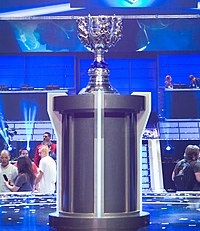

El League of Legends World Championship (en español: Campeonato Mundial de League of Legends), también conocido como Worlds, es un torneo anual de League of Legends organizado por Riot Games y que supone la culminación de cada temporada. Los equipos compiten por el título de campeón, la Copa del Invocador, y un premio de varios miles de dólares. En 2018, las finales fueron vistas por 99,6 millones de personas, rompiendo el récord de la edición de 2017. El torneo ha sido ampliamente elogiado por sus actuaciones ceremoniales, además de recibir una alta atención mediática debido a su naturaleza emocional y dramática.
